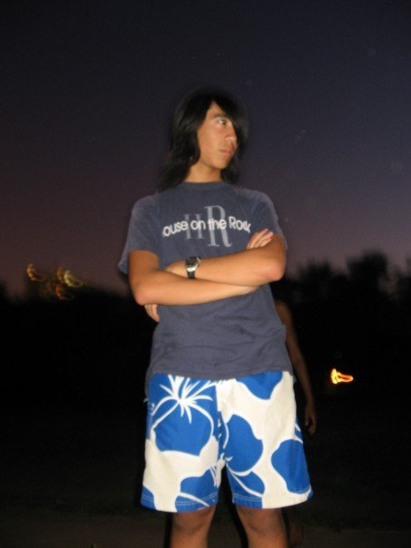

Chapter 2: Crumbs of Femininity
- ---x-xXx-x--- -
My sister and I are children, she is 1-2 years older than me. One evening we are having a cozy fun time hanging out, and we want to sleep in the same bunk of the bunk bed instead of in our usual spots. Dad won't let us, and he won't explain why.
Some time later, we're on a cross-country family road trip (we will see Attack of the Clones later on this trip, which places me at 10 years old). A motel layout requires that I share a bed with my sister. I'm filled with a suffocating sense of shame and dread, and I desperately try to talk my way out of it... can't I sleep with Mom or Dad instead? Why can't my older brother sleep next to my sister? But the matter is settled, everyone wondering why I've made such a fuss over simple logistics. I try to sleep on the furthest corner of the bed, nearly falling out. Dad ribs me (?) in exceedingly poor taste by tucking in the sheets on my side, sealing me within.
- --x-x-x-- -
After Obachan Kittaka (my great grandma) passes away, a family moves into the downstairs apartment of our two-flat. They have four daughters, who, to varying degrees, become very close with my sister.
An intense and terrifying girl-energy pervades the apartment. Mostly I stay out of their way, but there are times when we cross paths—moments where the sexes intermingle for a birthday party, a water fight, or a fearsome game of capture the flag. I feel ashamed and guilty and curious, just being around them.
At different points in the future, my siblings will hint at some sense of loss... a disconnect along gender lines. My sister and I craft together: paper doll clothes, tiny clay food, books about our stuffed animals that she writes and I illustrate. We play hand games and Cat's Cradle and make-believe. But over time, our interests apparently diverge. My brother and I spend more time together and my sister spends more time with the downstairs neighbors. Who starts it? Who pushes who away? It feels impossible to say.
- --x-x-x-- -
One summer at Vacation Bible School, my crew leader is a teenager named Maggie. Maggie is very sweet and I can tell she really cares about us having a good VBS. I do all the silly hand motions to the songs, because I want her to know that we're all engaged and having fun. I want her to know that she's doing a good job. Towards the end of the week, my mom helps me get a gift for Maggie. I pick out little frog earrings for her from the department store, because they are cute and fun. She's so happy when I give them to her.
Years later, I'm a teenage VBS crew leader leading around my own group of kids. I do all the silly hand motions to the songs, because I want the kids to feel comfortable and excited. There's a very young, timid girl in my crew. Sometimes she gets scared during Bible reenactment skits and she goes to my older sister for comfort (my and my sister's crews are paired). I know it's wrong, but deep down I'm jealous of how my sister gets to be safe and nurturing. There are deep rules, sacred roles that even a small child can correctly intuit.
- --x-x-x-- -
Sometimes I nab small bits of information regarding femininity. Table scraps that happen to fall near me by virtue of my having female relatives.
I'm with my family at our cousins' house. Somehow we get on the topic of eyebrows and we start comparing eyebrow thickness. "Mom's are definitely the thinnest," I say confidently. "Well... not naturally" she says, hesitantly. I'm confused. My cousin, David, is a little older than me. He leans over and tells me that some people pluck out their eyebrows. Shocked, I ask, "Why would anyone do that?" He shrugs and tilts his head at his older sister. "She does", he mouths.
I catch the end of a talk about "modesty", my dad telling my sister that the evocatively titled "spaghetti strap" is inappropriate. I ask what spaghetti strap is, but my dad is uncomfortable and doesn't tell me. Is it underwear?
- --x-x-x-- -
As I enter public high school, I gradually realize that I am a visible entity, that people's perceptions of each other are shaped by looks. I stop wearing exclusively cargo khakis and I stop getting buzz cuts from my mom.
Girls compliment my lengthening hair, and ask to touch it. They say it is so thick and shiny and beautiful. When girls talk about my hair, there is a sort of kinship, a recognition of the relationship between their long hair and my own. But alas, the rapid growth of my hair will also come back to bite me:

Photo uploaded August 2, 2007
NAIJA: his hair is growing just a little bit too long. cut it before it reaches tim's length!
ME: I don't know how to cut it. I don't want it short like it was before. And I want to see what it's like to tie it back.
NAIJA: oh no! NO! hair looks BAD on guys when it's tied back. except on wilson, he can pull it off. just get a trim, and get it back where it was like a month ago, lol.
PAUL: so mean naija!! it looks good tied back [joni]. really
TIFFANY: I don't think she meant to be mean. She was saving him from social suicide. ;D I kid, I kid.
NAIJA: aww [joni], i wasn't trying to be mean! do what you want with your hair. what do i know anyways.
ME: it's ok... I mean, it's just sort of an experiment. I don't know where my hair is going.
Naija is right, of course; ideally I'd trim my hair or treat it with some sort of intentionality. But I can't conceptualize what I need, even to myself. Allowing hair to grow is one thing: it's a sort of coincidence, a whim of nature, only loosely tied to my agency and responsibility. Making conscious choices about my hair, on the other hand, feels impossible to justify.
There must only be an unmanipulated black box of longing.